Thiruppathi Supermarket: The Nerve Center of Achchuthan's Operations
Thiruppathi Supermarket: The Nerve Center of Achchuthan's Operations
Jaffna Monitor hellojaffnamonitor@gmail.com 29 of the LTTE abroad. The supermarket building also doubles as the hub for their cyber operations. From this location, Achchuthan and his brother Ilangeswaran coordinate online attacks and manage digital operations, collecting funds in the name of Tamil Eelam. From this base, Achchuthan and his team maintain strong connections with members of the LTTE's foreign branches and key diaspora networks, furthering their influence and activities abroad. Thiruppathi Supermarket: The Nerve Center of Achchuthan's Operations According to credible sources, Thiruppathi Supermarket—now operating under the name Coccinelle Supermarché—serves as the nerve center for Achchuthan and his team's operations. Interestingly, Thiruppathi SARL was registered under Achchuthan's real name, Sivarajah Pirunthapan, who is listed as the official owner. The owner's address provided for the registration is 6 A Rue Rognon, 27950 La Chapelle Longueville, France. Achchuthan's younger brother, Lankeswaran Sivarasa, is married to Suganthiny Rajaratnam, a civil engineering graduate from the University of Peradeniya and an alumna of Mahajana College, Tellippalai. Born in Legal documents showing that Thiruppathi Supermarchés et Hypermarchés was registered under Pirunthapan Sivarajah, also known as Achchuthan
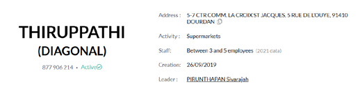
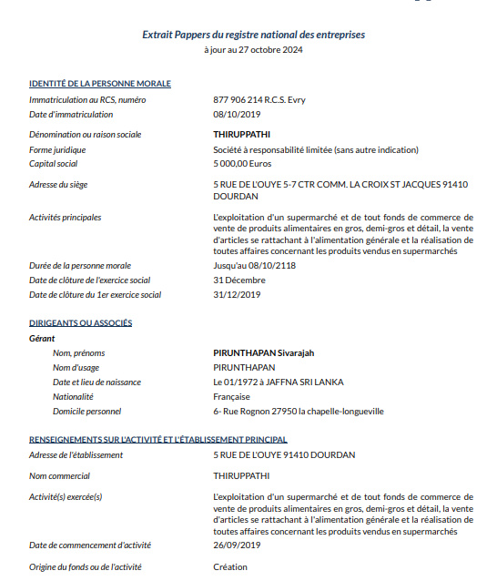
Jaffna Monitor hellojaffnamonitor@gmail.com 30 July 1975, Suganthiny plays a key role in the operations of Thiruppathi Supermarket. She held a shareholding position in the business, actively managing its day-to-day operations while maintaining an ownership stake in the venture. While her husband, Lankeswaran, was sent abroad by the LTTE during the peace period to study technology, Suganthiny—who married him in May 2003 in Colombo— accompanied him to Malaysia. There, she worked as an engineer at Avcom Design Solutions from 2007 to 2014. During her tenure at Avcom Design Solutions in Selangor, Malaysia, Suganthiny specialized in AutoCAD design work for a telecommunications company. Her responsibilities included developing technical designs and layouts essential to the company's projects across Malaysia. A visitor to the supermarket shared a revealing observation: the workforce consists of 15 to 20 employees, all Sri Lankan Tamils, many of whom are former LTTE guards. Most of these workers are reportedly undocumented, lacking proper work permits, and are exploited with low wages, their vulnerable status leaving them at the mercy of the management. Suganthiny Rajaratnam / Suganthini Lankeswaran One of the LTTE's early aircraft, with the founder of the LTTE Air Force, Col. Shankar (left), and LTTE supremo Prabhakaran (right) standing in front of it
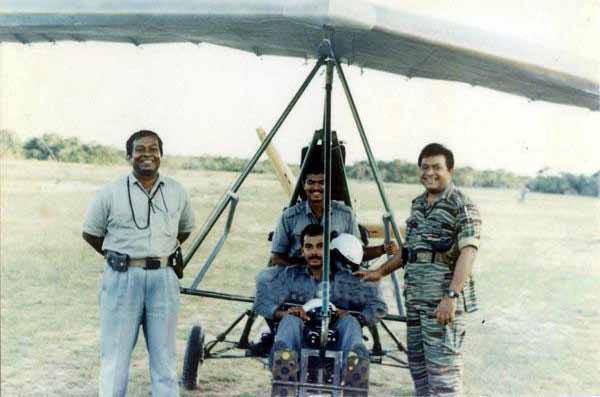
Jaffna Monitor hellojaffnamonitor@gmail.com 31 A credible source who previously worked with Achchuthan provided further insight into the supermarket's hidden agenda: "If you go downstairs," the source revealed, "you'll find a concealed world—Tiger flags, LTTE propaganda materials, books, and notices scattered everywhere. It's as if time stopped for the LTTE here. Stepping into that basement feels like entering a space still firmly under Tiger's control." In addition to Thiruppathi Supermarket, Achchuthan oversees a network of multiple businesses, supermarkets, and restaurants, many of which were once integrated into the LTTE's financial network. His web of enterprises spans across France and other countries, with operations sustained through a tight-knit group of associates and family members, each playing a pivotal role in maintaining and expanding the businesses. Diversity Cuisine: A Culinary Facade for Covert Operations Though Achchuthan was a skilled pilot with a Private Pilot License (PPL) from DGAC, France, and an Agent de Trafic certification from Aeroform International, he also excelled as a restaurateur and chef. His aviation studies were concealed under a cover story of hotel management studies. A credible source reveals he attended the Singapore Institute of Hospitality and completed HACCP training at CCI Évreux, a French chamber of commerce offering professional programs. Achchuthan and his wife, Sakalya, founded Diversity Cuisine on August 18, 2015, in the Galerie Marchande at Carrefour, located at 5 Boulevard Isambard, 27200 Vernon, France, adjacent to the bustling Carrefour hypermarket. Vernon is a charming historical town nestled along the scenic banks of the Seine, situated halfway between Paris and Rouen, far from areas with significant Tamil populations. The restaurant enjoys a prime location, just 10 minutes from the nearest railway station, making it easily accessible to travelers and locals alike. Staying true to its name, Diversity Cuisine showcases an eclectic selection of dishes from around the world, attracting food lovers from far and wide. As one enthusiastic visitor described it: "From India to Japan, from Texas to Brussels—this is the kind of culinary journey every foodie dreams of!" Established as a Société à responsabilité limitée (SARL), Diversity Cuisine holds the following legal credentials: • SIREN: 812 832 855 • SIRET (head office): 812 832 855 00017 • RCS registration: Registered at the Evreux registry on August 12, 2015 • Registration with the RNE: Registered on August 12, 2015 • VAT number: FR57812832855 • RCS number: 812 832 855 RCS Evreux • Share capital: €10,000 While the restaurant exudes a vibrant and inviting atmosphere, a more elusive story lies beneath the surface. Sivarasa Pirunthapan— also known as Achchuthan, Pirunthapan Rajah, and Suresh—a fugitive reportedly evading Interpol, has found sanctuary in Vernon, using Diversity Cuisine as his front. Hidden in plain sight, he operates the restaurant with his wife, Sakalya, seamlessly blending his passion for gastronomy with covert efforts to foment unrest and violence in Sri Lanka, jeopardizing the lives of thousands
Jaffna Monitor hellojaffnamonitor@gmail.com 32 of former fighters who now lead peaceful, innocent lives in the country. While his daughter, born in 2005, enjoys the privileges of a stable life, studying in high school and excelling as a competitive swimmer. One of our sources, who visited the restaurant, reported being warmly welcomed by a man named "Raja," who introduced himself as the owner. However, our facial recognition expert later confirmed that "Raja" is, in fact, Achchuthan, who is reportedly evading Interpol. Aathi and Sanjana: Businesses Fueling LTTE's Covert Operations Abroad Another key associate of Achchuthan is Thananayagam Kamalanathan, also known by his alias Thileepan, a former LTTE fighter. Kamalanathan is married to Shobana Kamalanathan, the sister of Suganthiny (the wife of Lingeswaran, Achchuthan's brother). Kamalanathan holds leadership positions in two significant ventures—Aathi and Sanjana— both closely linked to LTTE operatives. Shobana also holds shares in Sanjana, further reinforcing the network's familial connections. Born in 1979 in Ramanathapuram, Kilinochchi, to Mr. and Mrs. Thananayagam and Thilgavathy (née Mandaithivu Chinniah), Kamalanathan's deep-rooted ties to the LTTE continue to shape his activities and influence. Kamalanathan oversees Aathi, a wholesale business registered under the official name Thisho Exotique d'Ivry SARL, located at 14 Rue Pierre Rigaud, 94200 Ivry-sur-Seine, France. This venture serves as both a trading hub and a covert center for LTTE activities, playing a crucial role within key Tamil diaspora networks. Founded on February 26, 2020, Aathi specializes in the wholesale trade of domestic goods under NAF/APE code 46.49Z. In 2022, it was classified as a small or medium- sized enterprise (PME). The company initially operated from Moissy-Cramayel but relocated its headquarters to Ivry-sur-Seine on September 12, 2023. It operates under SIREN 881 940 639 and VAT number FR71 881 940 639. Beyond commerce, Aathi provides logistical support for Achchuthan's network, aiding efforts to Sivarasa Pirunthapan, also known as Achchuthan, at his Diversity Cuisine restaurant in Vernon, France
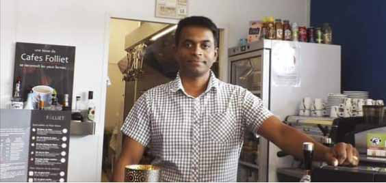
Jaffna Monitor hellojaffnamonitor@gmail.com 33 Part of a legal document showing that Diversity Cuisine is owned by Sivarasa Pirunthapan, also known as Achchuthan, and his wife Sakalya Pirunthapan Ownership details of Diversity Cuisine Legal documents showing that shares of Diversity Cuisine are divided between Sivarasa Pirunthapan, also known as Achchuthan, and his wife Sakalya Pirunthapan A news publication called Vernon Direct featuring an article about Diversity Cuisine, along with a photo of the owner
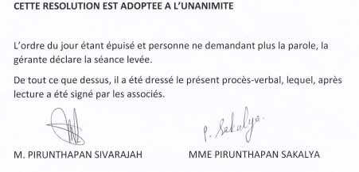
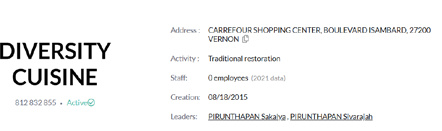
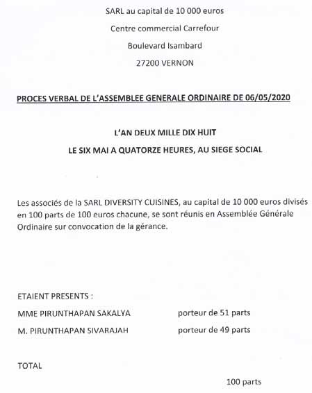
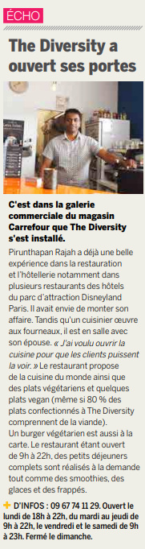
Jaffna Monitor hellojaffnamonitor@gmail.com 34 Front view of Diversity Cuisine Google Map image showing the exact location of Diversity Cuisine
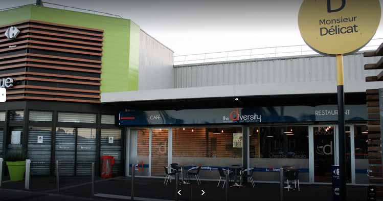
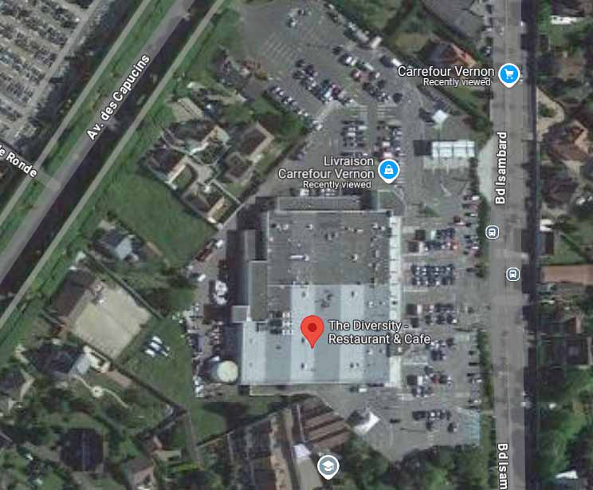
Jaffna Monitor hellojaffnamonitor@gmail.com 35 destabilize Sri Lanka. Notably, Achchuthan served as both a shareholder and former director of Aathi, further deepening the intrigue surrounding the company's operations. Sanjana (Mini Market de Paris) Sanjana, operating under the trade name Mini Market de Paris, is another venture managed by Kamalanathan. Located at 14 Avenue de Paris, 94380 Bonneuil-sur-Marne, France, it was established on April 16, 2018 and offers a wide range of products, including exotic goods, cosmetics, prepaid phone cards, ready- to-wear clothing, and import/export services. Sanjana focuses on the retail trade of general food products and is registered under NAF/ APE code 47.11B. It was formally listed with the Créteil Trade and Companies Register (RCS) on May 17, 2018. Kamalanathan assumed leadership of Sanjana on June 11, 2024, further expanding his network of LTTE-linked enterprises. Before his tenure, the business was managed by his wife, Shobana Kamalanathan (née Rajarathnam), who played a pivotal role in the company's operations from 2018 to 2024. Ownership of Sanjana is equally split between Shobana Kamalanathan and Selvaruban Sujeeban, each holding 50% of the shares. Born on March 26, 1982, in Jaffna, Shobana remains actively involved in the company's operations. Legal and Financial Overview of Sanjana • SIREN: 839 660 644 • SIRET (Head Office): 839 660 644 00015 • RCS Number: 839 660 644 RCS Créteil • VAT Number: FR02839660644 • Share Capital: €3,000 • Collective Agreement: Retail and wholesale trade with a predominance of food (IDCC 2216) Lankeswaran's Handyman & Equipments: A New Front for Hidden Agendas? Much like Aathi, Sanjana serves more than just commercial purposes. The business is deeply intertwined with LTTE activities, functioning as a key hub within the organization's global operations. Its strategic importance underscores the persistence of LTTE elements Price list inside Diversity Cuisine (Special Arrangement)
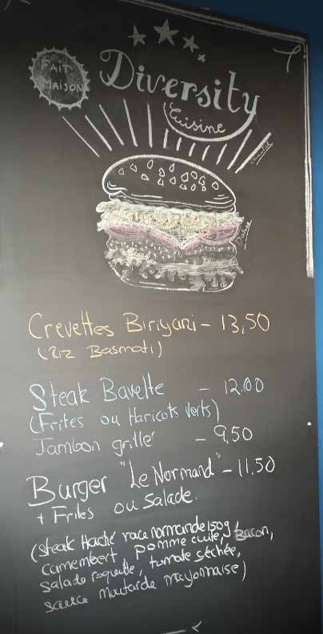
Jaffna Monitor hellojaffnamonitor@gmail.com 36 abroad, operating under the guise of legitimate businesses while pursuing covert objectives. Lankeswaran's Handyman & Equipments: A New Front for Hidden Agendas? In March 2024, Sivarasa Lankeswaran, brother of Achchuthan, launched yet another proxy enterprise— Handyman & Equipments, a specialized construction firm operating under the legal structure of a SASU (Société par Actions Simplifiée Unipersonnelle). Officially founded on March 22, 2024, the company is headquartered at 27 Allée de la Loire, 77178 Saint-Pathus, France. While Lankeswaran serves as the company's President, it is widely believed that his wife, Mrs. Suganthiny Rajaratnam—a civil engineering graduate from the University of Peradeniya—plays a critical role in managing the business. Handyman & Equipments is classified under NAF/APE code 43.99C, signifying its expertise in general masonry and large-scale construction work. Operating within the artisan framework, the company adheres to the IDCC 1597 collective labor agreement, governing building enterprises with more than ten employees. The company's fiscal year will conclude on December 31, 2024. Legal and Administrative Details • SIREN: 925 255 077 • SIRET (Head Office): 925 255 077 00016 • VAT Number: FR51925255077 • RCS Registration: Meaux Registry, April 4, 2024 • Address: 27 Allée de la Loire 77178 Saint-Pathus, France On April 4, 2024, Sivarasa Lankeswaran officially assumed leadership of Handyman & Equipments. His registered personal address is Résidence du Parc, Building Peupliers, Apartment 2, Dourdan (Essonne), France. Key Players in Achchuthan's Web The primary associates of Achchuthan (Sivarajah Pirunthapan) are his immediate family members and close relatives, all of whom play pivotal roles in supporting and expanding his ventures. His two brothers—Lankeswaran Sivarasa and Rajaputhiran Sivarajah—along with his sister, Mrs. Sumithirathevy Shivraja AATHI - Thisho Exotique d'Ivry Part of a legal document showing that AATHI is owned by Thananayagam Kamalanathan
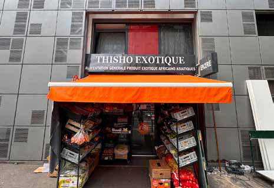
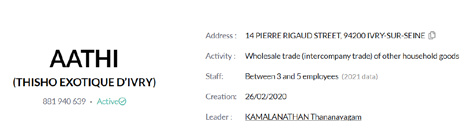
Jaffna Monitor hellojaffnamonitor@gmail.com 37 Navaratnam, and their spouses actively contribute to his operations. This tightly-knit familial network forms the backbone of their business empire, seamlessly facilitating both legitimate enterprises and covert activities tied to Achchuthan's efforts to incite unrest in Sri Lanka. Family Involvement and Operations • Sakalya Pirunthapan – Achchuthan's wife and co-manager of Diversity Cuisine since 2017, actively involved in running the business alongside her husband. • Pirunthapan, Lankeswaran, and Rajaputhiran – All three brothers play crucial roles in the family's business operations, serving as key facilitators in Achchuthan's covert mission to reignite unrest in Sri Lanka. Their coordinated efforts drive both the growth of their ventures and the manipulation of former LTTE fighters, putting the lives of these individuals and their families at grave risk. • Lankeswaran Sivarasa (born November 18, 1975, in Jaffna, Sri Lanka) resides at Résidence du Parc, Building Peupliers, Apartment 2, Dourdan (Essonne), France, and retains Sri Lankan nationality. Married to Mrs. Suganthiny Rajaratnam since May 2003 in Colombo, Lankeswaran, a former LTTE guard, is the mastermind behind cyberattacks Part of a legal document showing that S Handyman & Equipments is owned by Lankeswaran Sivarasa Sivarasa Pirunthapan, also known as Achchuthan, at a pro-LTTE book release in London
Jaffna Monitor hellojaffnamonitor@gmail.com 38 orchestrated by LTTE remnants. He works closely with Achchuthan to destabilize Sri Lanka, targeting vulnerable former fighters still living within the country. • Rajaputhiran Sivarajah (born September 17, 1982, in Jaffna) lives at 27 Allée de la Loire, Saint-Pathus (Seine-et-Marne), France, holding a Sri Lankan passport. Married to Mrs. Sharmila Sarweswaran on August 22, 2016, in Gien (Loiret), France, Rajaputhiran plays a vital role in coordinating the network's activities across borders. • Mrs. Sumithirathevy Shivraja Navaratnam (born June 29, 1978, in Tellippalai, Sri Lanka) is involved in one of the family ventures, SIVA ET SIVA, located at 17 Rue des Merisiers, 78711 Mantes-la-Ville, France. Specializing in retail and trade services, While Sumithirathevy retains her Sri Lankan nationality, there is little evidence to suggest her direct involvement in her brothers' malicious activities. Sivarasa Pirunthapan
Rajaputhiran Sivarajah Signature of Rajaputhiran Sivarajah Signature of Sakalya Pirunthapan Signature of Sivarasa Pirunthapan (also known as Achchuthan) Signature of Lankeswaran Sivarasa Part of legal documents showing the business ventures of Sivarasa Pirunthapan, also known as Achchuthan

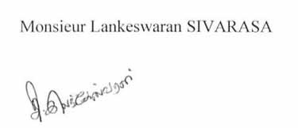
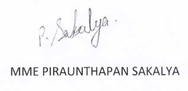
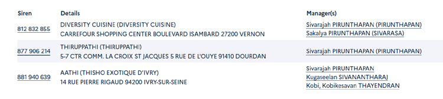
Jaffna Monitor hellojaffnamonitor@gmail.com 39 Additional Network Associates • Suganthiny Rajaratnam – The wife of Lankeswaran, Suganthiny plays a key role in the network, managing Thirupathi Supermarket, one of the network's flagship enterprises. The supermarket plays a discreet role in sustaining financial flows across their operations. • Thananayagam Kamalanathan and Shobana Kamalanathan – Further strengthening the network are Thananayagam Kamalanathan and his wife, Shobana—Suganthiny's sister— whose involvement reinforces the familial bonds underpinning the group's ventures. Together, they ensure unwavering loyalty and discretion, solidifying the foundation of the network's operations. This well-coordinated family network drives Achchuthan's ambitions, with their influence spanning Europe and Sri Lanka. They seamlessly blend legitimate business enterprises with covert activities—all aimed at reigniting chaos and unrest in Sri Lanka. Other Key Operatives within the Network Several associates, including former LTTE fighters and sympathizers, remain actively involved: • Thayendran Kobi – A former director of Aathi, Kobi played a critical role in overseeing the company's operations. • Sivanantharaj Kugaseelan – Managed Aathi from 2020 to 2021. • Thavarajasingam Nishanthan – Since 2024, Nishanthan has served as director and co-owner of SIVA ET SIVA, where he has played a pivotal role in managing the company and spearheading its expansion efforts. These individuals continue to hold key roles within the network, reinforcing its operations and ensuring its reach across borders. part of legal documents showing the business ventures of Sivarasa Pirunthapan, also known as Achchuthan Suganthiny Rajaratnam
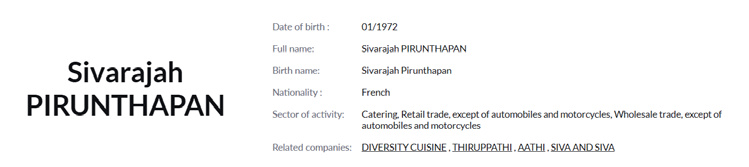
Jaffna Monitor hellojaffnamonitor@gmail.com 40 A few proxy business outlets operated or managed by Sivarasa Pirunthapan, also known as Achchuthan, his family members, or associates include: • Diversity Cuisine (Vernon): Established in 2015, this restaurant has been under the management of Pirunthapan since 2017. • Thiruppathi (Dourdan): A retail operation closely tied to the network's activities, playing a role in sustaining its commercial interests. • Aathi (Ivry-sur-Seine): A wholesale company briefly managed by Pirunthapan in 2020, serving as a key part of the network's supply chain. • Siva et Siva (Mantes-la-Ville): A retail business managed by Pirunthapan from 2021 to 2024, contributing to the network's expansion and operations. These businesses represent only a fraction of the network's ventures—many more remain hidden under various fronts Achchuthan with fellow LTTE Air Force commanders in 1998
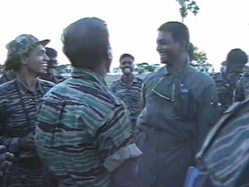